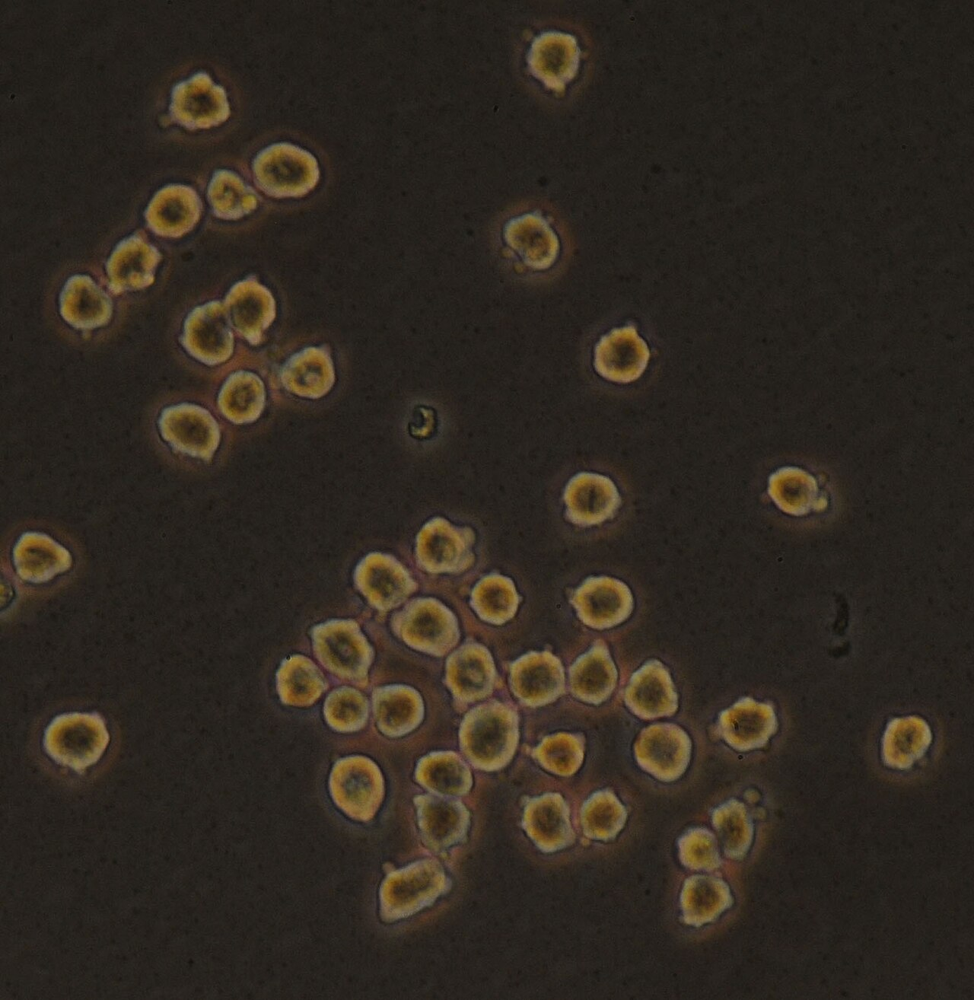

动物细胞工程（二）：动物细胞融合与单克隆抗体
本期导读
动物细胞工程（二） · 杂交瘤细胞 · 两次筛选

视频原话 · 导读3 句
- 同学们好！这节课梳理人教版选择性必修三第二章第二节的第二部分——动物细胞融合技术与单克隆抗体。10.2s
- 高考常考单克隆抗体的制备流程、两次筛选的目的和方法，以及杂交瘤细胞的特点。8.0s
- 我们按七个考点梳理，每个考点都讲清楚怎么考、怎么做。5.6s
动物细胞融合01#
动物细胞融合：使两个或多个动物细胞结合形成一个细胞 → 杂交细胞（具有原来细胞的遗传信息）
PEG 融合法（化学）
电融合法（物理）
灭活病毒诱导法（生物，动物特有）
灭活病毒：失去感染能力，但保留融合活性
易错
灭活病毒诱导法是动物细胞融合特有的方法，不能用于植物原生质体融合
视频原话5 句
- 考点一，动物细胞融合。它是使两个或多个动物细胞结合形成一个细胞的技术，融合后形成的细胞叫杂交细胞。10.9s
- 杂交细胞具有原来两个或多个细胞的遗传信息。4.4s
- 诱导方法有：PEG融合法、电融合法和灭活病毒诱导法。7.8s
- 灭活病毒，是指用物理或化学手段使病毒失去感染能力，但保留了融合活性。7.5s
- 易错：灭活病毒诱导法是动物细胞融合特有的方法，不能用于植物原生质体融合。7.9s
与植物杂交比较02#
| 比较项目 | 植物体细胞杂交 | 动物细胞融合 |
|---|---|---|
| 原理 | 细胞膜的流动性、细胞的全能性 | 细胞膜的流动性 |
| 前处理 | 纤维素酶、果胶酶去壁 | 胰蛋白酶分散成单个细胞 |
| 诱导方法 | PEG、电融合、离心、高 Ca2+—高 pH | PEG、电融合、灭活病毒 |
| 结果 | 杂种植株 | 杂交细胞 |
| 意义 | 打破生殖隔离，远缘杂交育种 | 制备单克隆抗体等 |
解题方法
抓住三处不同：是否去壁、能否用灭活病毒、能否得到个体
视频原话5 句
- 考点二，动物细胞融合与植物体细胞杂交的比较。原理：都依赖细胞膜的流动性，植物体细胞杂交还要用到细胞的全能性。11.8s
- 前处理：植物要先用纤维素酶和果胶酶去除细胞壁；动物要用胰蛋白酶分散成单个细胞。9.0s
- 诱导方法：动物比植物多了一个灭活病毒诱导法。4.8s
- 结果：植物体细胞杂交得到杂种植株；动物细胞融合一般只得到杂交细胞。7.6s
- 考法：比较表格。解题方法：抓住三处不同——去壁、灭活病毒、能否得到个体。8.6s
单抗的制备流程03#
特定抗原免疫小鼠
→
从脾中取 B 淋巴细胞
+ 骨髓瘤细胞→
诱导融合
→
选择培养基筛选
第一次筛选
杂交瘤细胞
第二次筛选→
克隆化培养 + 抗体检测
→
能产生所需抗体的杂交瘤细胞
小鼠腹腔内增殖 / 体外培养
→
从腹水或培养液中提取单克隆抗体
解题方法
记住顺序：免疫 → 取 B 细胞 → 融合 → 两次筛选 → 体内或体外培养
视频原话6 句
- 考点三，单克隆抗体的制备流程。第一步，用特定的抗原对小鼠进行免疫。7.9s
- 第二步，从小鼠脾中获得能产生特定抗体的B淋巴细胞。5.7s
- 第三步，把B淋巴细胞和骨髓瘤细胞融合，用特定的选择培养基进行第一次筛选，得到杂交瘤细胞。9.6s
- 第四步，对杂交瘤细胞进行克隆化培养和抗体检测，第二次筛选，得到能产生所需抗体的杂交瘤细胞。10.1s
- 第五步，把它注射到小鼠腹腔内增殖，或者在体外培养，从腹水或培养液中获取单克隆抗体。9.2s
- 考法：流程图填空。解题方法：记住顺序——免疫、取细胞、融合、两次筛选、培养。9.4s
两次筛选04#
融合后的细胞：未融合的 B 细胞、骨髓瘤细胞；B—B、瘤—瘤融合细胞；B—瘤融合的杂交瘤细胞
| 比较项目 | 第一次筛选 | 第二次筛选 |
|---|---|---|
| 方法 | 特定的选择培养基 | 克隆化培养 + 抗体检测 |
| 结果 | 只有杂交瘤细胞能生长 | 得到能分泌所需抗体的杂交瘤细胞 |
| 原因 | 淘汰未融合和同种融合的细胞 | B 细胞有多种，杂交瘤细胞产生的抗体各不相同 |
易错
第一次靠选择培养基选出杂交瘤细胞；第二次靠抗体检测选出能产生特定抗体的细胞
视频原话5 句
- 考点四，两次筛选。融合后的细胞有多种：未融合的细胞、同种细胞融合的细胞，以及B细胞和骨髓瘤细胞融合的杂交瘤细胞。12.4s
- 第一次筛选：用特定的选择培养基，在上面只有杂交瘤细胞才能生长，其他细胞都死亡。8.4s
- 但是，免疫小鼠的B细胞有很多种，所以得到的杂交瘤细胞产生的抗体也各不相同。8.1s
- 第二次筛选：进行克隆化培养和抗体检测，经多次筛选，得到能分泌所需抗体的杂交瘤细胞。9.1s
- 易错：两次筛选的方法和目的不同——第一次靠选择培养基，选出杂交瘤细胞；第二次靠抗体检测，选出能产生特定抗体的细胞。12.2s
杂交瘤细胞05#
B 淋巴细胞
✓ 能产生抗体
✗ 不能无限增殖
✗ 不能无限增殖
骨髓瘤细胞
✓ 能无限增殖
✗ 不能产生抗体
✗ 不能产生抗体
杂交瘤细胞
✓ 既能迅速大量增殖 ✓ 又能产生抗体
解题方法
为什么选这两种细胞？答各自的优点和缺点，融合后优点互补
视频原话4 句
- 考点五，杂交瘤细胞的特点。B淋巴细胞能产生抗体，但不能无限增殖。7.5s
- 骨髓瘤细胞能无限增殖，但不能产生抗体。4.5s
- 两者融合成的杂交瘤细胞，既能迅速大量增殖，又能产生抗体。6.1s
- 考法：问为什么选这两种细胞融合。解题方法：答各自的优点和缺点，融合后优点互补。9.1s
单抗的优点与应用06#
优点：能准确识别抗原的细微差异，与特定抗原特异性结合，并可大量制备
作为诊断试剂：识别病原体、检测早孕等
运载药物：抗体—药物偶联物（ADC）
易错
ADC 中杀伤肿瘤细胞的是药物；单克隆抗体只起导向（识别、定位）作用
视频原话5 句
- 考点六，单克隆抗体的优点和应用。优点：能准确地识别抗原的细微差异，与特定抗原发生特异性结合，并且可以大量制备。12.2s
- 应用一：作为诊断试剂，比如快速准确地识别各种病原体，检测早孕。7.0s
- 应用二：用于运载药物，也就是抗体—药物偶联物，简称ADC。6.6s
- ADC由抗体、接头和药物三部分组成：抗体负责识别、定位肿瘤细胞，药物负责杀伤。8.7s
- 易错：在ADC中，起治疗作用、杀伤肿瘤细胞的是药物，单克隆抗体起的是导向作用。8.5s
B细胞的来源07#
特定抗原
→
多次免疫小鼠
→
检测血清抗体
→
从脾中取 B 淋巴细胞
只有经过免疫的 B 淋巴细胞，才能产生针对该抗原的抗体
一般多次免疫，检测血清中的抗体，确认免疫成功后再取脾
“单克隆”：由单个杂交瘤细胞增殖形成的细胞群
易错
未免疫小鼠的 B 细胞不能产生所需抗体；B 淋巴细胞取自脾，不是骨髓
视频原话4 句
- 考点七，B淋巴细胞的来源。必须先用特定的抗原免疫小鼠，再从小鼠的脾中提取B淋巴细胞。9.6s
- 因为只有经过免疫的B淋巴细胞，才能产生针对这种抗原的抗体。6.0s
- 而且一般要多次免疫，并检测小鼠血清中的抗体，确认免疫成功后再取脾。7.6s
- 易错：未免疫小鼠的B细胞，不能产生所需的抗体；单克隆抗体中的“单克隆”，指的是由单个杂交瘤细胞增殖形成的细胞群。11.5s
易错速查✓
先自己判断，再点按钮查看对错与解析。
- 1灭活病毒可诱导植物原生质体融合说法错误：灭活病毒只用于诱导动物细胞融合
- 2动物细胞融合能形成杂种个体说法错误：一般只得到杂交细胞，不能形成个体
- 3第一次筛选用特定的选择培养基说法正确。
- 4选择培养基上存活的细胞都能产生所需抗体说法错误：还需克隆化培养和抗体检测
- 5单克隆抗体特异性强、灵敏度高说法正确。
- 6B淋巴细胞要从免疫过的小鼠脾中获取说法正确。
先免疫再融合，两次筛选得单抗！
视频原话 · 易错速查5 句
- 最后，用六道判断题检验一下。3.6s
- 判断一：灭活病毒可以诱导植物原生质体融合？错。判断二：动物细胞融合能形成杂种个体？错，一般只得到杂交细胞。13.2s
- 判断三：第一次筛选用特定的选择培养基？对。判断四：选择培养基上存活的细胞都能产生所需抗体？错，还要抗体检测。13.3s
- 判断五：单克隆抗体特异性强、灵敏度高？对。判断六：B淋巴细胞要从免疫过的小鼠脾中获取？对。11.4s
- 七个考点串成一条线：先免疫再融合，两次筛选得单抗。我们下期再见！7.4s
图片来源
图片来源：Wikimedia Commons —— GerryShaw《Hybridoma cells grown in tissue culture》CC BY-SA 3.0
Photo: GerryShaw, CC BY-SA 3.0